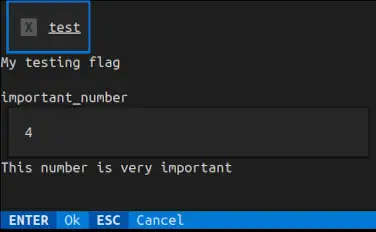
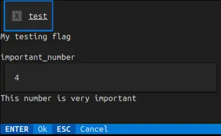

Mininterface – access to GUI, TUI, CLI and config files


Write the program core, do not bother with the input/output.
 

Check out the code, which is surprisingly short, that displays such a window or its textual fallback.
from dataclasses import dataclass
from mininterface import run
@dataclass
class Env:
"""Set of options."""
test: bool = False
""" My testing flag """
important_number: int = 4
""" This number is very important """
if __name__ == "__main__":
env = run(Env, prog="My application").env
# Attributes are suggested by the IDE
# along with the hint text 'This number is very important'.
print(env.important_number)
You got CLI
It was all the code you need. No lengthy blocks of code imposed by an external dependency. Besides the GUI/TUI, you receive powerful YAML-configurable CLI parsing.
$ ./hello.py
usage: My application [-h] [--test | --no-test] [--important-number INT]
Set of options.
╭─ options ──────────────────────────────────────────────────────────╮
│ -h, --help show this help message and exit │
│ --test, --no-test My testing flag (default: False) │
│ --important-number INT This number is very important (default: 4) │
╰────────────────────────────────────────────────────────────────────╯
You got config file management
Loading config file is a piece of cake. Alongside program.py, put program.yaml and put there some of the arguments. They are seamlessly taken as defaults.
You got dialogues
Check out several useful methods to handle user dialogues. Here we bound the interface to a with statement that redirects stdout directly to the window.
with run(Env) as m:
print(f"Your important number is {m.env.important_number}")
boolean = m.is_yes("Is that alright?")


Contents
Background
Wrapper between the tyro argparse replacement and tkinter_form that converts dicts into a GUI.
Writing a small and useful program might be a task that takes fifteen minutes. Adding a CLI to specify the parameters is not so much overhead. But building a simple GUI around it? HOURS! Hours spent on researching GUI libraries, wondering why the Python desktop app ecosystem lags so far behind the web world. All you need is a few input fields validated through a clickable window... You do not deserve to add hundred of lines of the code just to define some editable fields. Mininterface is here to help.
The config variables needed by your program are kept in cozy dataclasses. Write less! The syntax of tyro does not require any overhead (as its argparse alternatives do). You just annotate a class attribute, append a simple docstring and get a fully functional application:
* Call it as program.py --help to display full help.
* Use any flag in CLI: program.py --test causes env.test be set to True.
* The main benefit: Launch it without parameters as program.py to get a full working window with all the flags ready to be edited.
* Running on a remote machine? Automatic regression to the text interface.
Installation
Install with a single command from PyPi.
Docs
See the docs overview at https://cz-nic.github.io/mininterface/.
Examples
This is a complex example.
from typing import Annotated
from dataclasses import dataclass
from mininterface.validators import not_empty
from mininterface import run, Tag, Validation
@dataclass
class NestedEnv:
another_number: int = 7
""" This field is nested """
@dataclass
class Env:
nested_config: NestedEnv
my_number: int = 5
""" This is just a dummy number """
my_string: str = "Hello"
""" A dummy string """
my_flag: bool = False
""" Checkbox test """
my_validated: Annotated[str, Validation(not_empty)] = "hello"
""" A validated field """
m = run(Env, title="My program")
# See some values
print(m.env.nested_config.another_number) # 7
print(m.env)
# Env(nested_config=NestedEnv(another_number=7), my_number=5, my_string='Hello', my_flag=False, my_validated='hello')
# Edit values in a dialog
m.form()